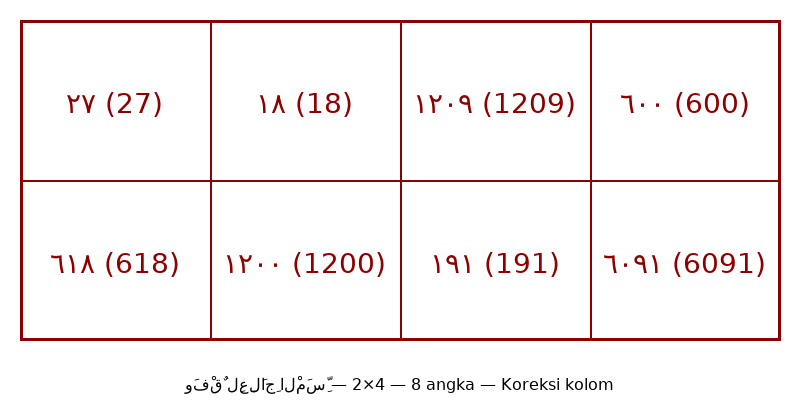

⚠️ Koreksi: Penempatan angka di kolom sebelumnya salah — diperbaiki: Baris1 | ٢٧ | ١٨ | ١٢٠٩ | ٦٠٠ | Baris2 | ٦١٨ | ١٢٠٠ | ١٩١ | ٦٠٩١ | — Gambar lama 3×3 diganti hal12_wafaq_corrected.png 2×4
arab
فَائِدَةٌ قَاطِعَةٌ لِعِلَاجِ الْمَسِّ
[ وَفْقٌ لِعِلَاجِ الْمَسِّ ]
| ٢٧ | ١٨ | ١٢٠٩ | ٦٠٠ |
Koreksi kolom — Kanan→Kiri
| ٦١٨ | ١٢٠٠ | ١٩١ | ٦٠٩١ |
Koreksi kolom — Kanan→Kiri
كِتَابَةُ الْآيَاتِ وَالسُّوَرِ تَبْدَأُ مِنْ فَوْقِ الْوَفْقِ مِنْ جِهَةِ الْيَمِينِ اتِّجَاهًا إِلَى الْيَسَارِ، وَفَّقَكُمُ اللهُ لِمَا يُحِبُّهُ وَيَرْضَاهُ.

[Gambar: Wafaq 2×4 Koreksi — 300 DPI — Kanan→Kiri]
| ٢٧ (27) | ١٨ (18) | ١٢٠٩ (1209) | ٦٠٠ (600) |
| ٦١٨ (618) | ١٢٠٠ (1200) | ١٩١ (191) | ٦٠٩١ (6091) |
latin (gaya baru)
Fā'idatun qāthi'atul-li'ilājil-massi
[ Wafqul-li'ilājil-massi ]
(Angka Arab Wafaq: 600 - 1209 - 18 - 27 / 6091 - 191 - 1200 - 618)
Kitābatul-āyāti was-suwari tabda'u min fauqil-wafqi min jihatil-yamīni ittijāhan ilal-yasāri, waffaqakumullāhu limā yuhibbuhū wa yardhāhu.
[ Wafqul-li'ilājil-massi ]
(Angka Arab Wafaq: 600 - 1209 - 18 - 27 / 6091 - 191 - 1200 - 618)
Kitābatul-āyāti was-suwari tabda'u min fauqil-wafqi min jihatil-yamīni ittijāhan ilal-yasāri, waffaqakumullāhu limā yuhibbuhū wa yardhāhu.
Terjemahan
Faedah Ampuh untuk Mengobati Kesurupan / Al-Mass (Visualisasi Wafaq):
[ Wafaq Pengobatan Kesurupan / Al-Mass ]
| ٢٧ (27) | ١٨ (18) | ١٢٠٩ (1209) | ٦٠٠ (600) |
| ٦١٨ (618) | ١٢٠٠ (1200) | ١٩١ (191) | ٦٠٩١ (6091) |
“Penulisan ayat-ayat dan surat-surat (5 surat di Hal11) dimulai dari bagian atas wafaq dari sebelah kanan melingkar menuju ke sebelah kiri (searah tulisan Arab / berlawanan jarum jam). Semoga Allah memberi taufik kepada kalian pada apa yang dicintai dan diridai-Nya.”
[ Wafaq Pengobatan Kesurupan / Al-Mass ]
| ٢٧ (27) | ١٨ (18) | ١٢٠٩ (1209) | ٦٠٠ (600) |
| ٦١٨ (618) | ١٢٠٠ (1200) | ١٩١ (191) | ٦٠٩١ (6091) |
“Penulisan ayat-ayat dan surat-surat (5 surat di Hal11) dimulai dari bagian atas wafaq dari sebelah kanan melingkar menuju ke sebelah kiri (searah tulisan Arab / berlawanan jarum jam). Semoga Allah memberi taufik kepada kalian pada apa yang dicintai dan diridai-Nya.”
| ٢٧ (27) | ١٨ (18) | ١٢٠٩ (1209) | ٦٠٠ (600) |
| ٦١٨ (618) | ١٢٠٠ (1200) | ١٩١ (191) | ٦٠٩١ (6091) |
Syarah
Struktur Wafaq ‘Adad Khāsh 2×4 (8 kotak): Dua baris × empat kolom, angka 600,1209,18,27 (baris 1) dan 6091,191,1200,618 (baris 2) — hasil takhrij Abjad dari Surat Al-Jin & Ayat Nur + Asmāul Husna. Arah Tadwīr: 5 surat/ayat (Asy-Syams, Ikhlas, Nur, Hajj, Jin) ditulis melingkari luar wafaq mulai kanan atas ke kiri. Tinta Za’faran+Misk+Ward dilebur dengan air hujan/sumur, digosok sabbābah 7×.
Khususiyah
Bentuk Rajah Angka Unik 2×4 jarang ditemukan — dirancang mengunci aura piring (shaḥn naqiyy). Kecepatan (sarī’atun-nafādz): kombinasi angka wafaq + 5 surat/ayat saat mahw 7× terbukti cepat menetralkan jin di syaraf dan melebur benteng penutup harta karun. Rajah angka tidak diterjemahkan — angka Arab ditulis apa adanya, arah penulisan dari kanan ke kiri.

[Gambar: Wafaq 2×4 — Koreksi kolom — 600,1209,18,27 / 6091,191,1200,618 — 300 DPI — sesuai teks]

[Gambar: Hal 12 Asli Lama — 3×3 — SALAH — untuk perbandingan]